Every real photograph in assets/original (field, office, award), followed by the recommended crop for the hero arch, the About section and the 3 Process steps. Cut-outs on white, illustrations, icons and logos are left out.
The pool is thin. Only two photos show the community in full frame: the women with membership cards, and the outdoor meeting with cash. Every recommendation is a different crop of one of these two, so some faces appear twice on the home page. More field photos from the client (client-requests E. Media) would fix that. Each crop can be swapped later without code changes.
Recommendations
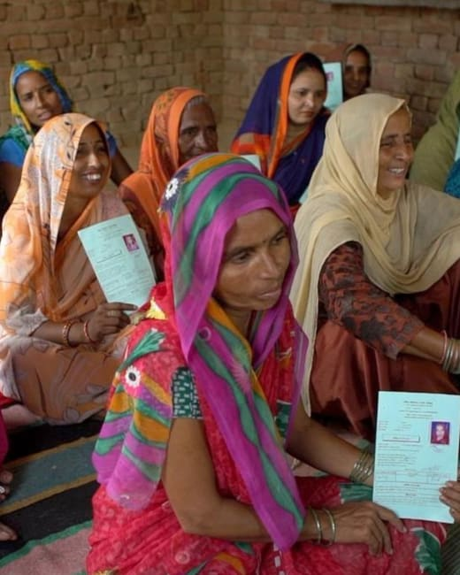
Hero archfinance_banner.jpg, centre crop (4:5)Real members, faces visible and smiling, holding their membership cards: the foundation's promise in one image, warm and dignified.
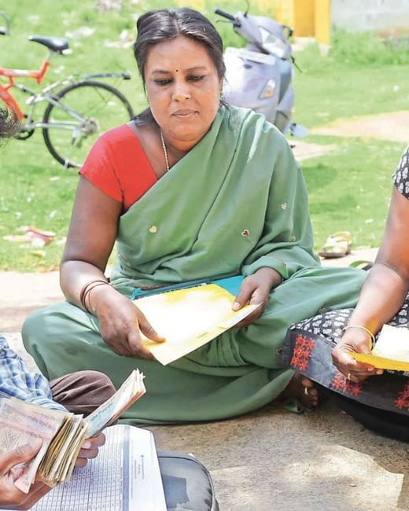
About sectionbest_hrms_banner.jpg, centre crop (4:5)A calm, close portrait of a member reviewing her papers. It shows responsible, everyday finance and is a different scene from the hero.
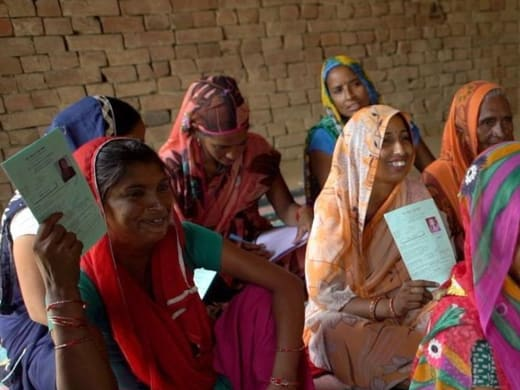
Process 01 · Member Registration & Assessmentfinance_banner.jpg, left crop (4:3)Women raising their new membership cards: registration, literally. The hero's left side, so the framing differs from the hero arch.
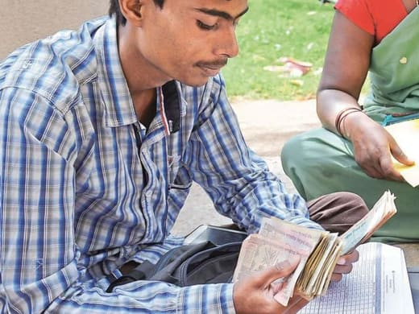
Process 02 · Financial Support & Capacity Buildingbest_hrms_banner.jpg, left crop (4:3)Cash and an account register being handled carefully. It matches "responsible financial services" without implying a specific loan.
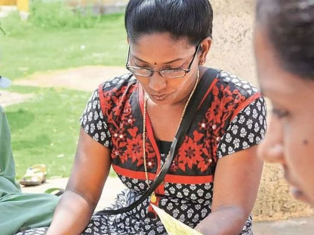
Process 03 · Monitoring & Community Developmentbest_hrms_banner.jpg, right crop (4:3)A field worker going through a member's papers: ongoing guidance and follow-up. A different person from the About photo.
All real photographs
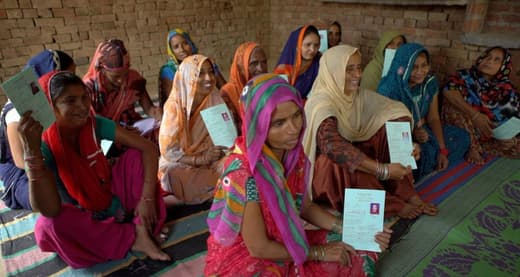
Fieldindex/finance_banner.jpg1920×1024. Women's group with membership cards. ✔ Used for the hero and Process 01.
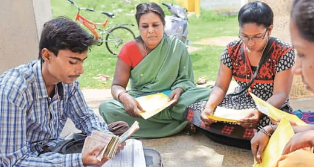
Fieldindex/best_hrms_banner.jpg1920×1024. Outdoor meeting with cash and papers. ✔ Used for About and Process 02–03.
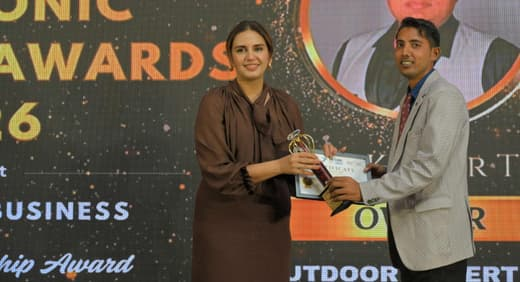
Awardindex/our-awards.jpeg1600×869. Reserved for the Milestone section (Home §7).Officeabout-us/about_us_hero.jpg1920×450. Desk, calculator, no people. Not recommended: stock-like and no community.Officecontact-us/contact_us.jpg1920×450. Laptop on a desk, no people. Not recommended.Office · teamindex/saurav.jpg481×480. Reserved for Team (Home §9).
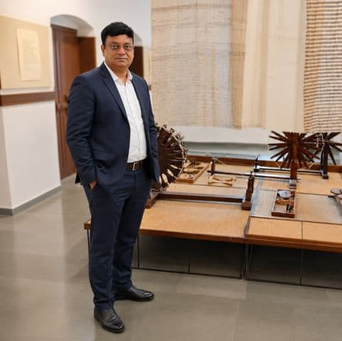
Office · teamindex/vikram-kumar.jpg481×480. Reserved for Team.
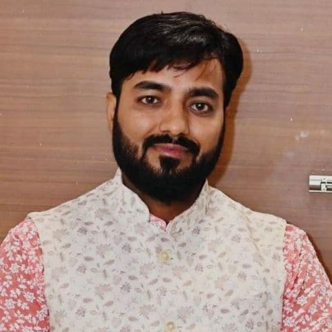
Office · teamindex/satyam.jpg481×481. Reserved for Team.Office · teamindex/Ranjeet.jpg481×480. Reserved for Team.
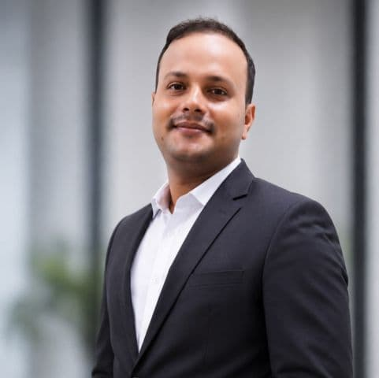
Office · teamindex/sumit.jpg481×480. Reserved for Team.
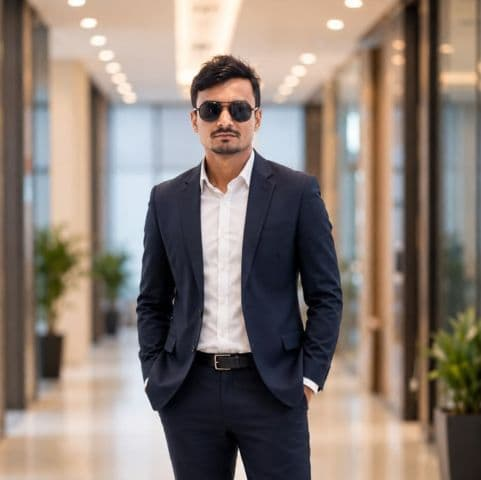
Office · teamindex/sonu-kumar.jpg481×480. Reserved for Team.
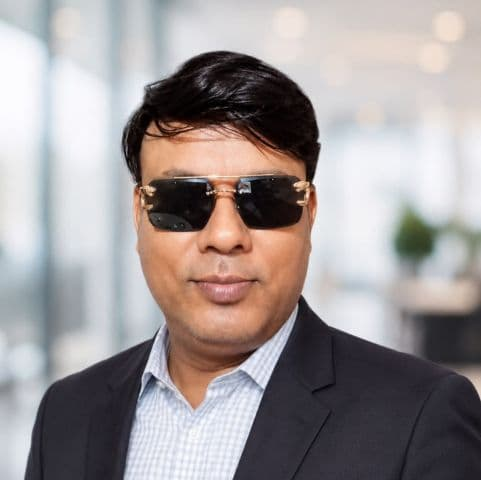
Office · teamindex/Shishir.jpg481×480. Reserved for Team.
Left out
index/about_me.jpg, about-us/thumb1.jpg, our-vision/vision.jpg: cut-outs on white (torn or blob edges), and only 400–480 px wide.
Registration.png, support.png, Community.png, career.png: illustrations, not photographs.
Icon SVGs, the counter background, the divider line and the old logos.